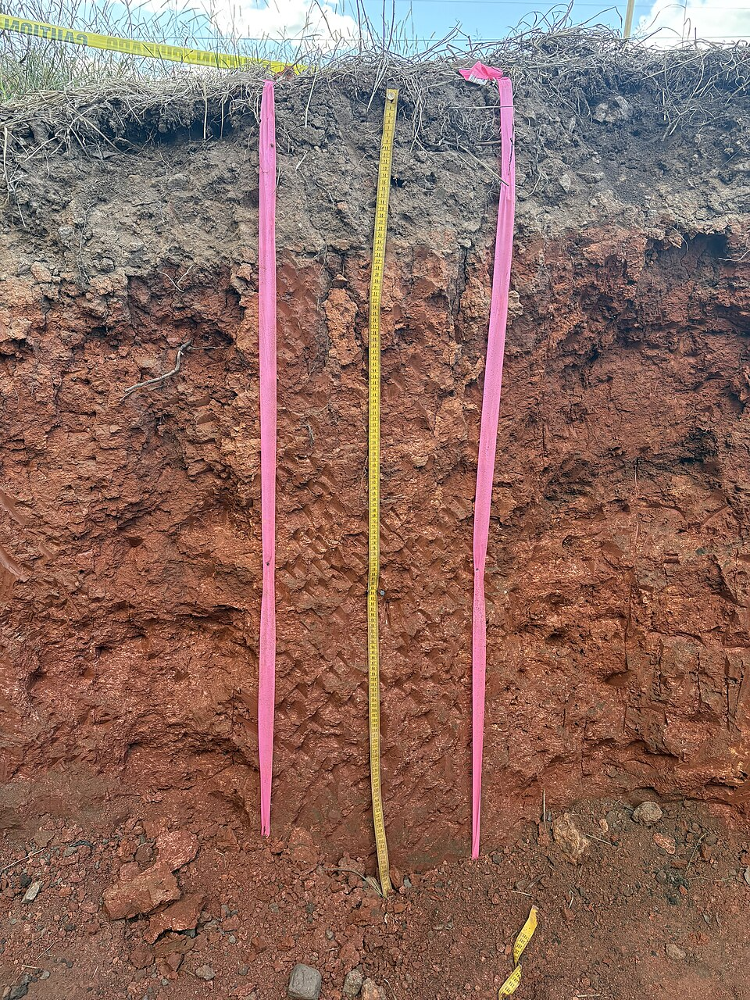

المملكة العربية السعودية — وزارة التعليم
كتاب العلوم — الجزء الأول من المقرر — طبعة ١٤٤٧ / ٢٠٢٥
التُّرْبَةُ
الصف الثاني الابتدائي
إعداد: نايف المطيري
موقع الدرس
أَيْنَ نَحْنُ فِي الْكِتَابِ؟ صفحات ١٤٦ – ١٥١
الفصل السادس موارد الأرضصفحة ١٣٧
الدرس الثاني التربةصفحات ١٤٦ – ١٥١
سؤال الدرس: كَيْفَ تَتَكَوَّنُ التُّرْبَةُ؟ (ص ١٤٨)
الأهداف
أَهْدَافُ التَّعَلُّمِ مستخلصة من ص ١٤٦ – ١٥١
فِي نِهَايَةِ الدَّرْسِ أَكُونُ قَادِرًا عَلَى أَنْ:
أُعَرِّفَ التُّرْبَةَ وَأَذْكُرَ مِمَّ تَتَكَوَّنُ. أُقَارِنَ بَيْنَ أَنْوَاعِ التُّرْبَةِ. أُبَيِّنَ كَيْفَ تَتَكَوَّنُ التُّرْبَةُ. أُمَيِّزَ بَيْنَ التُّرْبَةِ السَّطْحِيَّةِ وَتَحْتَ السَّطْحِيَّةِ. أُعَرِّفَ الدُّبَالَ. التهيئة
أَنْظُرُ وَأَتَسَاءَلُ ص ١٤٦ — سؤال الكتاب
تَتَكَوَّنُ التُّرْبَةُ مِنْ فُتَاتِ الصُّخُورِ. مَاذَا نَجِدُ أَيْضًا فِي التُّرْبَةِ؟
معرفة سابقة
مَاذَا أَعْرِفُ مِنْ قَبْلُ؟ تمهيد تربوي
الصُّخُورُ أَشْيَاءُ غَيْرُ حَيَّةٍ فِي الْأَرْضِ
الْمَعَادِنُ تَتَكَوَّنُ مِنْهَا الصُّخُورُ
النَّبَاتُ يَنْمُو فِي التُّرْبَةِ
الْيَوْمَ مِمَّ تَتَكَوَّنُ التُّرْبَةُ؟
توضيح إضافي: عَرَفْنَا الصُّخُورَ فِي الدَّرْسِ السَّابِقِ، وَالتُّرْبَةُ تَبْدَأُ مِنْ فُتَاتِهَا.
المفردات
الْمُفْرَدَاتُ الْعِلْمِيَّةُ ص ١٤٨ — مفردات الكتاب
التُّرْبَةُ خَلِيطٌ مِنْ فُتَاتِ الصُّخُورِ، وَقِطَعٍ صَغِيرَةٍ مِنْ بَقَايَا النَّبَاتَاتِ وَالْحَيَوَانَاتِ الْمَيِّتَةِ.
الدُّبَالُ تُرْبَةٌ تَحْوِي الْكَثِيرَ مِنْ بَقَايَا النَّبَاتَاتِ وَالْحَيَوَانَاتِ الْمُتَحَلِّلَةِ.
الْمُصْطَلَحَانِ كَمَا وَرَدَا فِي كِتَابِ الطَّالِبِ، صَفْحَتَا ١٤٨ وَ ١٥١.
الفكرة الرئيسة
السُّؤَالُ الْأَسَاسِيُّ ص ١٤٨
كَيْفَ تَتَكَوَّنُ التُّرْبَةُ؟
تَحْتَاجُ التُّرْبَةُ إِلَى وَقْتٍ طَوِيلٍ لِتَتَكَوَّنَ.
الشرح
مَا التُّرْبَةُ؟ ص ١٤٨ — نص الكتاب
التُّرْبَةُ خَلِيطٌ مِنْ:
فُتَاتِ الصُّخُورِ
قِطَعٍ صَغِيرَةٍ مِنْ بَقَايَا النَّبَاتَاتِ وَالْحَيَوَانَاتِ الْمَيِّتَةِ هَذِهِ الْقِطَعُ تَصِيرُ جُزْءًا مِنَ التُّرْبَةِ، وَتُسَاعِدُ النَّبَاتَاتِ عَلَى النُّمُوِّ.
الشرح
تَخْتَلِفُ التُّرَبُ ص ١٤٩ — نص الكتاب
تَخْتَلِفُ التُّرَبُ فِي لَوْنِهَا وَمَلْمَسِهَا .
التُّرْبَةُ الدَّاكِنَةُ تَحْتَفِظُ بِمَاءٍ أَكْثَرَ. بَعْضُ أَنْوَاعِ التُّرْبَةِ نَاعِمٌ، وَبَعْضُهَا الْآخَرُ خَشِنٌ فِيهِ الْكَثِيرُ مِنَ الْحَصَى. كَمَا أَنَّ بَعْضَهَا رَمْلِيٌّ، وَبَعْضَهَا الْآخَرَ طِينِيٌّ. محاكاة
أَنْوَاعُ التُّرْبَةِ محاكاة للوحة «أنواع التربة» ص ١٤٨ – ١٤٩
أَضْغَطُ عَلَى نَوْعِ التُّرْبَةِ:
سؤال من الكتاب
أَقْرَأُ الصُّورَةَ ص ١٤٩
أَصِفُ كُلَّ نَوْعٍ مِنْ أَنْوَاعِ التُّرْبَةِ.
إظهار الإجابة إجابة نموذجية مقترحة التُّرْبَةُ الزِّرَاعِيَّةُ (السَّطْحِيَّةُ): دَاكِنَةُ اللَّوْنِ، فِيهَا بَقَايَا نَبَاتَاتٍ وَحَيَوَانَاتٍ، وَتَحْتَفِظُ بِمَاءٍ أَكْثَرَ، وَهِيَ الْأَفْضَلُ لِلزِّرَاعَةِ.التُّرْبَةُ الطِّينِيَّةُ: فَاتِحَةٌ مَائِلَةٌ إِلَى الْوَرْدِيِّ، نَاعِمَةُ الْمَلْمَسِ، وَتَتَمَاسَكُ عِنْدَ بَلِّهَا.التُّرْبَةُ الرَّمْلِيَّةُ: بُرْتُقَالِيَّةٌ مَائِلَةٌ لِلْحُمْرَةِ، حُبَيْبَاتُهَا خَشِنَةٌ مُفَكَّكَةٌ، وَلَا تَحْتَفِظُ بِالْمَاءِ كَثِيرًا.
سؤال من الكتاب
أَتَحَقَّقُ ص ١٤٩
مِمَّ تَتَكَوَّنُ التُّرْبَةُ؟
إظهار الإجابة إجابة نموذجية تَتَكَوَّنُ التُّرْبَةُ مِنْ فُتَاتِ الصُّخُورِ ، وَقِطَعٍ صَغِيرَةٍ مِنْ بَقَايَا النَّبَاتَاتِ وَالْحَيَوَانَاتِ الْمَيِّتَةِ .
الشرح
كَيْفَ تَتَكَوَّنُ التُّرْبَةُ؟ ص ١٥٠ — نص الكتاب
تَحْتَاجُ التُّرْبَةُ إِلَى وَقْتٍ طَوِيلٍ لِتَتَكَوَّنَ؛
حَيْثُ تَتَفَتَّتُ الصُّخُورُ وَالْمَعَادِنُ إِلَى قِطَعٍ أَصْغَرَ. وَتَتَحَلَّلُ بَقَايَا النَّبَاتَاتِ وَالْحَيَوَانَاتِ الْمَيِّتَةِ؛ لِتُصْبِحَ جُزْءًا مُغَذِّيًا فِي التُّرْبَةِ. مِمَّا يَجْعَلُ التُّرْبَةَ أَفْضَلَ لِلزِّرَاعَةِ. محاكاة
كَيْفَ تَتَكَوَّنُ التُّرْبَةُ؟ محاكاة لنص ص ١٥٠
١. صُخُورٌ كَبِيرَةٌ
مَعَ مُرُورِ الْوَقْتِ…
إِعَادَة
تَبْدَأُ التُّرْبَةُ مِنْ صُخُورٍ كَبِيرَةٍ فِي الْأَرْضِ.
الشرح
طَبَقَاتُ التُّرْبَةِ ص ١٥٠ — شكل الكتاب
التُّرْبَةُ السَّطْحِيَّةُ هِيَ الْأَفْضَلُ لِنُمُوِّ النَّبَاتَاتِ؛ لِأَنَّهَا تَحْتَوِي عَلَى بَقَايَا نَبَاتَاتٍ وَحَيَوَانَاتٍ مُتَحَلِّلَةٍ.
التُّرْبَةُ تَحْتَ السَّطْحِيَّةِ الطَّبَقَةُ الَّتِي تَقَعُ تَحْتَ التُّرْبَةِ السَّطْحِيَّةِ.
محاكاة
طَبَقَاتُ التُّرْبَةِ محاكاة لشكل ص ١٥٠
أَضْغَطُ عَلَى الطَّبَقَةِ:
الشرح
مَا الدُّبَالُ؟ ص ١٥١ — نص الكتاب
يُمْكِنُ أَنْ أُلَاحِظَ تَحَلُّلَ الْأَشْيَاءِ فِي التُّرْبَةِ مِنْ خِلَالِ التَّغَيُّرَاتِ الَّتِي تَحْدُثُ فِيهَا، وَذَلِكَ بِعَمَلِ كَوْمَةِ دُبَالٍ .
الدُّبَالُ تُرْبَةٌ تَحْوِي الْكَثِيرَ مِنْ بَقَايَا النَّبَاتَاتِ وَالْحَيَوَانَاتِ الْمُتَحَلِّلَةِ.
هَذَا الْجِذْعُ الْمُتَآكِلُ وَالْمُتَعَفِّنُ سَيَتَحَلَّلُ وَيُصْبِحُ جُزْءًا مِنَ التُّرْبَةِ. (ص ١٥١)
سؤال من الكتاب
أَتَحَقَّقُ ص ١٥١
أَيُّ طَبَقَاتِ التُّرْبَةِ أَفْضَلُ لِزِرَاعَةِ النَّبَاتَاتِ؟
إظهار الإجابة إجابة نموذجية التُّرْبَةُ السَّطْحِيَّةُ ؛ لِأَنَّهَا تَحْتَوِي عَلَى بَقَايَا نَبَاتَاتٍ وَحَيَوَانَاتٍ مُتَحَلِّلَةٍ تَجْعَلُهَا مُغَذِّيَةً وَأَفْضَلَ لِنُمُوِّ النَّبَاتَاتِ.
نشاط
نَشَاطُ الْكِتَابِ ص ١٥١ — نشاط الكتاب
أَعْمَلُ كَوْمَةَ دُبَالٍ. وَأُضِيفُ الْمَاءَ إِلَيْهَا، ثُمَّ أَخْلِطُ التُّرْبَةَ، وَأُلَاحِظُ التَّغَيُّرَاتِ مَرَّةً فِي الْأُسْبُوعِ.
نشاط أسري (ص ١٥٠): اجعل طفلك/طفلتك يتفحص مكونات التربة عندما تجلسان في حديقة الحي.
نشاط استقصائي
أَسْتَكْشِفُ — الْأَدَوَاتُ ص ١٤٧ — نشاط الكتاب
سؤال النشاط: مَاذَا يُوجَدُ فِي التُّرْبَةِ؟
أَحْتَاجُ إِلَى:
تُرْبَةٍ
طَبَقَيْنِ
مِصْفَاةٍ
عَدَسَةٍ مُكَبِّرَةٍ السلامة
قَبْلَ أَنْ نَبْدَأَ النَّشَاطَ تعليمات السلامة — ص ٧
أَغْسِلُ يَدَيَّ جَيِّدًا بَعْدَ لَمْسِ التُّرْبَةِ. لَا أَضَعُ التُّرْبَةَ فِي فَمِي أَوْ أَنْفِي أَوْ قُرْبَ عَيْنَيَّ. أَهُزُّ الْمِصْفَاةَ بِرِفْقٍ حَتَّى لَا يَتَنَاثَرَ الْغُبَارُ. لَا أَلْمِسُ الْحَيَوَانَاتِ الصَّغِيرَةَ فِي التُّرْبَةِ، وَأُخْبِرُ الْمُعَلِّمَ عَمَّا أَرَاهُ. نشاط استقصائي
أَسْتَكْشِفُ — الْخُطُوَاتُ ص ١٤٧ — الخطوات ١ – ٣
أَضَعُ قَلِيلًا مِنَ التُّرْبَةِ فِي مِصْفَاةٍ، ثُمَّ أَهُزُّهَا بِرِفْقٍ فَوْقَ طَبَقٍ. أُلَاحِظُ. أَنْظُرُ إِلَى التُّرْبَةِ فِي الطَّبَقِ بِاسْتِخْدَامِ عَدَسَةٍ مُكَبِّرَةٍ، وَأَرْسُمُ مَا أَرَاهُ.أَضَعُ مَا تَبَقَّى مِنَ التُّرْبَةِ فِي الْمِصْفَاةِ عَلَى طَبَقٍ آخَرَ، ثُمَّ أُلَاحِظُ التُّرْبَةَ، وَأَرْسُمُ مَا أَرَاهُ. الْمِصْفَاةُ تَفْصِلُ الْحُبَيْبَاتِ النَّاعِمَةَ عَنِ الْقِطَعِ الْكَبِيرَةِ كَالْحَصَى وَبَقَايَا النَّبَاتَاتِ.
أستكشف أكثر
الْخُطْوَةُ الرَّابِعَةُ ص ١٤٧
٤. أَتَوَاصَلُ. أُكَرِّرُ النَّشَاطَ مُسْتَخْدِمًا تُرْبَةً مُخْتَلِفَةً.
إظهار الإجابة إجابة نموذجية مقترحة أُكَرِّرُهُ بِتُرْبَةٍ رَمْلِيَّةٍ وَأُخْرَى طِينِيَّةٍ وَثَالِثَةٍ زِرَاعِيَّةٍ دَاكِنَةٍ ، ثُمَّ أُقَارِنُ:الرَّمْلِيَّةُ يَنْزِلُ مُعْظَمُهَا مِنَ الْمِصْفَاةِ؛ لِأَنَّ حُبَيْبَاتِهَا خَشِنَةٌ مُفَكَّكَةٌ.الزِّرَاعِيَّةُ يَبْقَى فِي الْمِصْفَاةِ الْكَثِيرُ مِنْ بَقَايَا النَّبَاتَاتِ وَالْحَصَى.
تقويم الدرس
أُفَكِّرُ وَأَتَحَدَّثُ وَأَكْتُبُ — السُّؤَالُ الْأَوَّلُ ص ١٥١
١. التَّتَابُعُ. مَا مَرَاحِلُ تَكَوُّنِ التُّرْبَةِ؟
إظهار الإجابة إجابة نموذجية ١. تَتَفَتَّتُ الصُّخُورُ وَالْمَعَادِنُ إِلَى قِطَعٍ أَصْغَرَ.تَتَحَلَّلُ بَقَايَا النَّبَاتَاتِ وَالْحَيَوَانَاتِ الْمَيِّتَةِ .جُزْءًا مُغَذِّيًا فِي التُّرْبَةِ.أَفْضَلَ لِلزِّرَاعَةِ .وَقْتٍ طَوِيلٍ .
تقويم الدرس
السُّؤَالُ الثَّانِي ص ١٥١
٢. أَتَحَدَّثُ. مَا الْأَنْوَاعُ الْمُخْتَلِفَةُ لِلتُّرْبَةِ؟
إظهار الإجابة إجابة نموذجية تُرْبَةٌ زِرَاعِيَّةٌ (سَطْحِيَّةٌ) دَاكِنَةٌ غَنِيَّةٌ بِالْبَقَايَا الْمُتَحَلِّلَةِ.تُرْبَةٌ طِينِيَّةٌ نَاعِمَةُ الْمَلْمَسِ.تُرْبَةٌ رَمْلِيَّةٌ خَشِنَةُ الْحُبَيْبَاتِ.
تقويم الدرس
السُّؤَالُ الثَّالِثُ ص ١٥١
٣. السُّؤَالُ الْأَسَاسِيُّ. كَيْفَ تَتَكَوَّنُ التُّرْبَةُ؟
إظهار الإجابة إجابة نموذجية تَتَكَوَّنُ التُّرْبَةُ عَبْرَ وَقْتٍ طَوِيلٍ : تَتَفَتَّتُ الصُّخُورُ وَالْمَعَادِنُ إِلَى قِطَعٍ أَصْغَرَ، وَتَتَحَلَّلُ بَقَايَا النَّبَاتَاتِ وَالْحَيَوَانَاتِ الْمَيِّتَةِ فَتُصْبِحُ جُزْءًا مُغَذِّيًا فِيهَا، مِمَّا يَجْعَلُ التُّرْبَةَ أَفْضَلَ لِلزِّرَاعَةِ.
الْعُلُومُ وَالصِّحَّةُ (ص ١٥١): أَعْمَلُ قَائِمَةً بِأَسْمَاءِ نَبَاتَاتٍ تَنْمُو فِي بَيْتِي، ثُمَّ أَضَعُ إِشَارَةَ (✓) أَمَامَ مَا يُؤْكَلُ مِنْهَا.
تدريب إضافي
أَسْئِلَةٌ تَدْرِيبِيَّةٌ إِضَافِيَّةٌ من إعداد المعلم — ليست من الكتاب
١. أَيُّ التُّرَبِ تَحْتَفِظُ بِمَاءٍ أَكْثَرَ؟
إظهار الإجابة الإجابة التُّرْبَةُ الدَّاكِنَةُ. (ص ١٤٩)
٢. مَا الدُّبَالُ؟
إظهار الإجابة الإجابة تُرْبَةٌ تَحْوِي الْكَثِيرَ مِنْ بَقَايَا النَّبَاتَاتِ وَالْحَيَوَانَاتِ الْمُتَحَلِّلَةِ. (ص ١٥١)
الملخص
مَاذَا تَعَلَّمْتُ؟ خلاصة ص ١٤٦ – ١٥١
التُّرْبَةُ خَلِيطٌ مِنْ فُتَاتِ الصُّخُورِ وَبَقَايَا النَّبَاتَاتِ وَالْحَيَوَانَاتِ الْمَيِّتَةِ. تَخْتَلِفُ التُّرَبُ فِي لَوْنِهَا وَمَلْمَسِهَا؛ فَمِنْهَا الرَّمْلِيُّ وَمِنْهَا الطِّينِيُّ. التُّرْبَةُ الدَّاكِنَةُ تَحْتَفِظُ بِمَاءٍ أَكْثَرَ. تَحْتَاجُ التُّرْبَةُ إِلَى وَقْتٍ طَوِيلٍ لِتَتَكَوَّنَ؛ تَتَفَتَّتُ الصُّخُورُ وَتَتَحَلَّلُ الْبَقَايَا. التُّرْبَةُ السَّطْحِيَّةُ هِيَ الْأَفْضَلُ لِنُمُوِّ النَّبَاتَاتِ. وَالدُّبَالُ تُرْبَةٌ غَنِيَّةٌ بِالْبَقَايَا الْمُتَحَلِّلَةِ. خريطة مفاهيم
أُرَتِّبُ أَفْكَارِي تنظيم لمحتوى الدرس
التُّرْبَةُ
مِمَّ تَتَكَوَّنُ
فُتَاتُ الصُّخُورِ بَقَايَا نَبَاتَاتٍ وَحَيَوَانَاتٍ وَقْتٌ طَوِيلٌ
طَبَقَاتُهَا وَأَنْوَاعُهَا
سَطْحِيَّةٌ: الْأَفْضَلُ لِلزِّرَاعَةِ تَحْتَ سَطْحِيَّةٍ رَمْلِيَّةٌ · طِينِيَّةٌ · دُبَالٌ
تقويم ختامي
أَخْتَارُ الْإِجَابَةَ الصَّحِيحَةَ تفاعلي — أسئلة تدريبية
١. التُّرْبَةُ خَلِيطٌ مِنْ فُتَاتِ الصُّخُورِ وَ:
الْمَاءِ الْمَالِحِ بَقَايَا النَّبَاتَاتِ وَالْحَيَوَانَاتِ الْمَيِّتَةِ الْهَوَاءِ فَقَطْ
٢. أَفْضَلُ طَبَقَاتِ التُّرْبَةِ لِزِرَاعَةِ النَّبَاتَاتِ هِيَ:
السَّطْحِيَّةُ تَحْتَ السَّطْحِيَّةِ الصَّخْرِيَّةُ
٣. التُّرْبَةُ الَّتِي تَحْوِي الْكَثِيرَ مِنَ الْبَقَايَا الْمُتَحَلِّلَةِ تُسَمَّى:
الدُّبَالَ الْمَعَادِنَ الْحَصَى
بطاقة الخروج
قَبْلَ أَنْ أُغَادِرَ الصَّفَّ تقويم ختامي
١ مِمَّ تَتَكَوَّنُ التُّرْبَةُ؟
٢ أَذْكُرُ نَوْعَيْنِ مِنْ أَنْوَاعِ التُّرْبَةِ.
٣ لِمَاذَا التُّرْبَةُ السَّطْحِيَّةُ أَفْضَلُ لِلزِّرَاعَةِ؟
أَكْتُبُ إِجَابَاتِي فِي بِطَاقَةٍ صَغِيرَةٍ وَأُسَلِّمُهَا لِلْمُعَلِّمِ.
إثراء اختياري
لوحةٌ تفاعلية: طبقاتُ التربة إثراء اختياري النطاق (أ) — التربة السطحية النطاق (أ) — التربة السطحية غنيٌّ بالدَّبال والمغذِّيات غنيٌّ بالدَّبال والمغذِّيات النطاق (ب) — تحت السطحية النطاق (ب) — تحت السطحية دبالٌ قليل وصخورٌ مفتَّتة دبالٌ قليل وصخورٌ مفتَّتة النطاق (ج) — صخور التجوية النطاق (ج) — صخور التجوية قطعٌ كبيرةٌ من الصخور قطعٌ كبيرةٌ من الصخور الصخور غير المُجَوَّاة الصخور غير المُجَوَّاة الطبقة الصلبة في الأسفل الطبقة الصلبة في الأسفل مقطعٌ في التربة: نطاقاتٌ يختلف سُمكها من منطقةٍ إلى أخرى.
النطاق (أ) النطاق (ب) النطاق (ج) الصخر الأم
اضغط على أيِّ عنصرٍ في الرسم، أو تابع الخطوات بالترتيب.
◀ السابق التالي ▶
إثراء اختياري
هَلْ تَعْلَمُ؟ إثراء اختياري ١
في التربة فتاتُ صخورٍ وبقايا نباتاتٍ وماءٌ وهواء .
٢
دودة الأرض تساعد التربة بأنفاقها.
٣
النبات لا ينمو جيدًا إلا في تربةٍ مناسبة.
التربة بيتُ الجذور ومصدر غذاء النبات.
إثراء اختياري
بِطَاقَاتُ الْمُفْرَدَاتِ — اضْغَطْهَا! إثراء اختياري التُّرْبَةُ اضغط لترى المعنى
خَلِيطٌ مِنْ فُتَاتِ الصُّخُورِ، وَقِطَعٍ صَغِيرَةٍ مِنْ بَقَايَا النَّبَاتَاتِ وَالْحَيَوَانَاتِ الْمَيِّتَةِ.
الدُّبَالُ اضغط لترى المعنى
تُرْبَةٌ تَحْوِي الْكَثِيرَ مِنْ بَقَايَا النَّبَاتَاتِ وَالْحَيَوَانَاتِ الْمُتَحَلِّلَةِ.
إظهار كل المعاني
اضغط على البطاقة لترى المعنى.
إثراء اختياري
لُعْبَةٌ: رَتِّبْ بِالتَّرْتِيبِ الصَّحِيحِ إثراء اختياري تتكوَّن التربة تتفتَّت الصخور تتحلَّل بقايا النباتات
↻ إعادة الترتيب
رتِّب تكوُّن التربة.
إثراء اختياري
الْعُلُومُ فِي حَيَاتِي إثراء اختياري تجربةٌ آمنة ضع تربةً وماءً في قارورةٍ مغلقةٍ ورُجَّها، ثم اتركها وارسم الطبقات.
تنبيه سلامة أُحكم إغلاق القارورة وأغسل يديَّ بعد التجربة.
🔎 إثراء مصوّر
عدسة العلوم ألاحظ · أتساءل · أفسّر
ما الاختلافات التي تستطيع ملاحظتها بين طبقات التربة؟

🔍 تكبير الصورة مقطع في التربة يكشف اختلاف لون طبقاتها وخصائصها. الصورة: Cjrufe · مصدر الصورة · CC0 · نسخة مصغرة دون تغيير المحتوى
👁️ تتكون التربة من فتات صخور وبقايا مخلوقات، ويوجد بين حبيباتها ماء وهواء.
💡 تختلف أحجام حبيبات التربة وفراغاتها، فتختلف سرعة مرور الماء فيها وقدرتها على الاحتفاظ به.
🟤 تعيش في التربة جذور ومخلوقات صغيرة؛ وهي مورد مهم لنمو النباتات.
مراجع الإثراء للمعلم
🧩 رسم تفاعلي
مكونات تجتمع في التربة أربط الأفكار
اضغط عناصر الرسم لاكتشاف معناها والعلاقة بينها.
1 🪨 حبيبات معدنية • 2 🍂 مادة عضوية • 3 💧 ماء • 4 🌬️ هواء
تجتمع هذه المكونات في التربة وتعيش فيها مخلوقات أيضًا؛ لا تتحول الحبيبات المعدنية إلى بقايا عضوية.
🪨 حبيبات معدنية تنشأ من تفتت الصخور وتغيرها.
🧪 مختبر الاستكشاف
قارن الماء الخارج من عينات تربة أتوقّع · أجرّب · أقارن
كيف تختلف كمية الماء النافذ إذا تغير نوع التربة وحده؟
نوع العينة
رملية مزيج طينية
▶ شغّل المحاكاة ↺ إعادة
ليس قياسًا لكؤوس ماء؛ تؤثر طريقة ضغط التربة وجذورها وبنيتها أيضًا.
مؤشر وصفي للماء النافذ من العينة
💧 💧 💧 💧 💧 💧 💧 💧 💧 💧
ماء يمر أسرع
ماء نافذ أكثر.
نثبت حجم العينة والماء والزمن. تساعد الفراغات الأكبر في الرمل على مرور الماء أسرع عادة.
توقّع النتيجة، ثم غيّر الحالة وشغّل المحاكاة.
🤔 لماذا نستخدم كمية الماء نفسها مع كل عينة؟
انْتَهَى الدَّرْسُ إعداد: نايف المطيري
العلوم — الصف الثاني الابتدائي — الجزء الأول من المقرر
↺ البداية
▶ السابق
التالي ◀
إظهار كل الإجابات
⛶ ملء الشاشة
إعداد: نايف المطيري